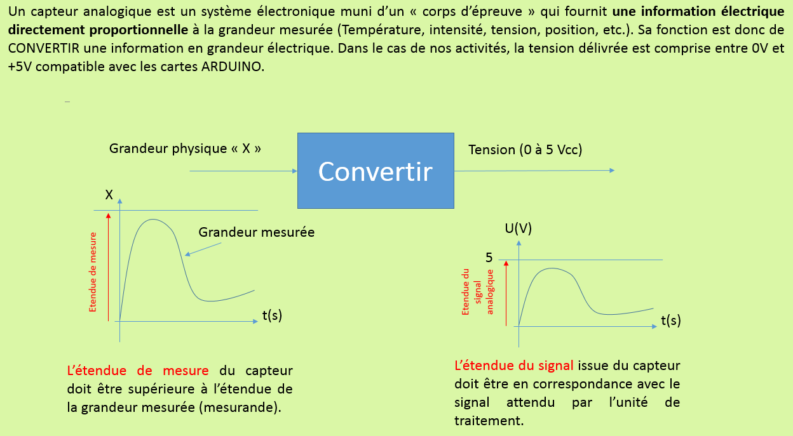
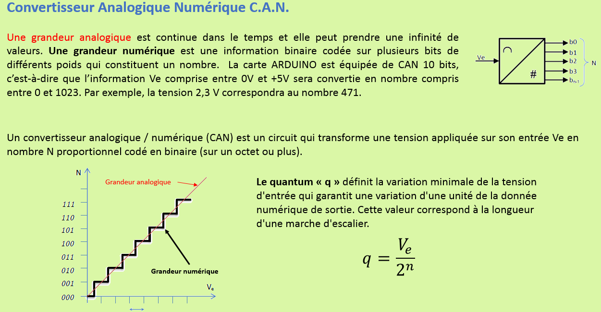
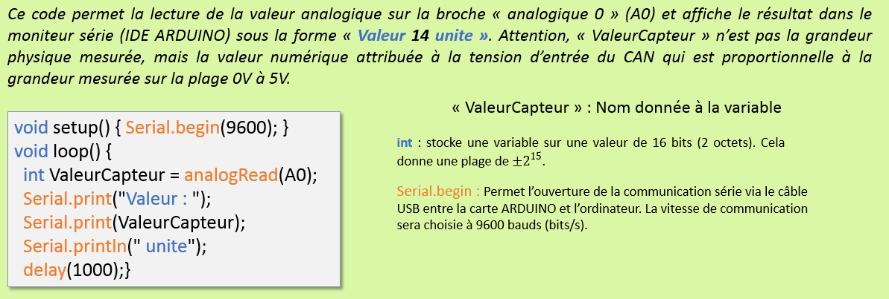
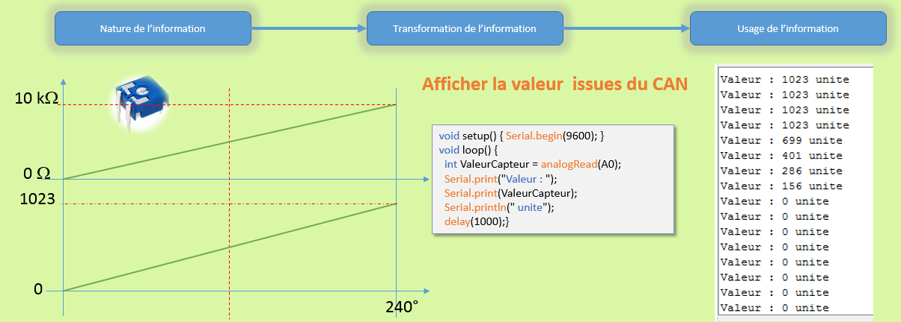
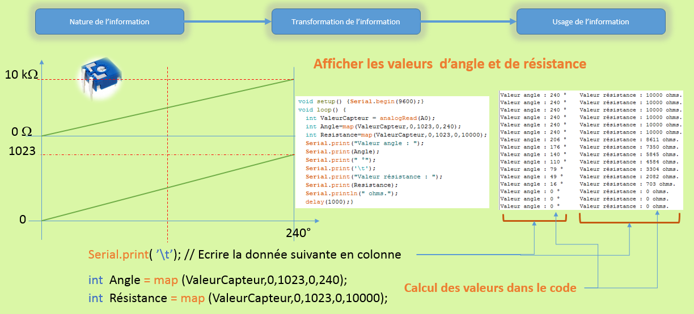
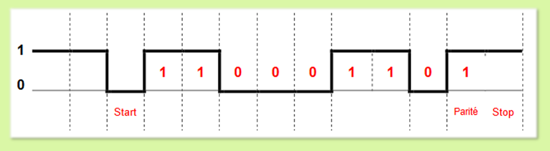
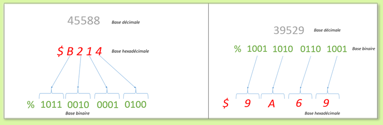
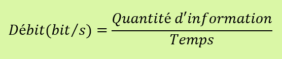

A l'issue des activités proposées, vous devez être capable de décoder un programme, alogrigramme ou algorithme qui décrit le fonctionnement partiel d'une chaine de mesure équipée d'un capteur analogique. Les caractéristiques d'une conversion analogique numérique doivent être maitrisées.

Vous devez être capabale d'exploiter une ressource technique, documentation, datasheet, afin de déterminer les caractériques d'un capteur analogique. La grandeur physique mesurée, l'étendue de mesure, la précision ainsi que les caractéristques de la grandeur électrique de sortie, plage de tension, sa sensibilité.


Vous devez être capable de décrire le principe fonctionnel d'un CAN (ou CNA) et être en mesure de calculer le quantum. De plus, il est nécessaire que vous sachiez convertir un nombre décimal en binaire et en hexadécimal (et réciproquement).

Retour en haut de la pageVous devez être capable de décoder un algorithme, algorigramme ou code (ARDUINO par exemple) qui met en relation un capteur et une IHM. Les structures algorithmiques (Boucle, condition, comptage, etc.) sont des prérequis pour appréhender des systèmes complexes.



Retour en haut de la pageLa communication entre systèmes utilise un ensemble de règles en vue d’échanger des informations qui s’appelle un protocole de communication. Il définit le format des informations échangées, qu’on appelle messages. "Le client" est celui qui demande (envoi de requêtes) et "le serveur" celui qui répond (envoi de réponses). L'ensemble des informations est rassemblé dans une trame (train d'information) suivant un protocole connu de l'émetteur et du récepteur. Les supports sont soient filaires ou hertziens.
Les différents types de liaisons sont :
La laison "simplex" est une liaison dans laquelle les données circulent dans un seul sens, c'est-à-dire de l'émetteur vers le récepteur. Ce type de liaison est utile lorsque les données n'ont pas besoin de circuler dans les deux sens (par exemple de la souris vers l'ordinateur ou de l’ordinateur vers l’écran...).
La laison "halph-duplex" est une liaison dans laquelle les données circulent dans un sens ou l'autre, mais pas les deux simultanément. Ainsi, avec ce genre de liaison chaque extrémité de la liaison émet à son tour.
La laison "full-duplex" est une liaison dans laquelle les données circulent de façon bidirectionnelle et simultanément. Ainsi, chaque extrémité de la ligne peut émettre et recevoir en même temps.
Ces liaisons peuvent être :
"Asynchrone", c'est une liaison dans laquelle chaque message est émis de façon irrégulière dans le temps, chaque message est précédé d'une information indiquant le début (bit START) et terminé par l'envoi d'une information de fin de transmission (bit STOP).
"Synchrone", dans cette liaison, émetteur et récepteur sont cadencés sur la même horloge. Le récepteur reçoit de façon continue les informations au rythme où l'émetteur les envoie.
Une trame en transmission asynchrone peut être constituée des éléments suivants :

Le récepteur détecte la trame grâce au premier front descendant qui apparait après un état de repos (Etat logique 1 ). La donnée est 1100 0110(2), soit 198(10) ou C6(16). Le bit de parité est « 1 », soit 5 « 1 » logique, la parité est impaire.
Les matériels utilisent un codage binaire 0 et 1 (0 volt, +X volts) pour traiter les informations. Cela nécessite un codage de l’information. Les microcontrôleurs sont des composants relevant de l’électronique numérique, et à ce titre, les données numériques qu’ils sont en mesure de manipuler sont exprimées dans le système de numération binaire. Les microcontrôleurs manipulent des nombres binaires, exprimés sur un nombre fini de bits. Le nombre de bits constitutifs de ces données, c'est-à-dire leur format, peut être égal à:
Les systèmes de numérations décimal, binaire et héxadécimal sont à connaitre. Vous devez être capable de transposer des valeurs numériques d'une base à l'autre.

Le débit d’une transmission mesure la quantité d’information que la liaison peut transmettre par unité de temps :

Retour en haut de la page